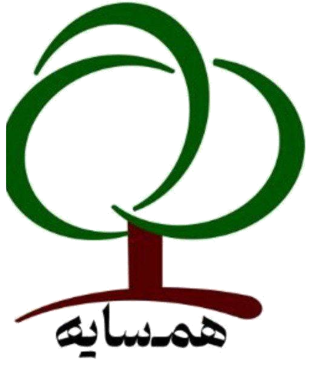

یک دقیقه با من حرف بزن؛ از هر چی که تو دلته، هر چی که امروز بهت گذشته. بعدش یک رنگ بهت نشون میدم که حالِ الانت رو نشون میده.
با زدن دکمه، اجازه دسترسی به میکروفون رو بده.
دارم گوش میدم... بگو امروز چطوری، چه اتفاقی افتاده، چه حسی داری.
دارم فکر میکنم...
این حس مهمه. لطفاً همین الان با معلم یا یکی از بزرگترهات دربارهاش صحبت کن.
این مرورگر از تبدیل گفتار به متن پشتیبانی نمیکنه. برای گفتگوی صوتی از گوگل کروم استفاده کن، یا همینجا تایپ کن:
فقط برای فعالیتِ کلاسی · تحلیل محلی و آفلاینه · گفتگو ذخیره نمیشه